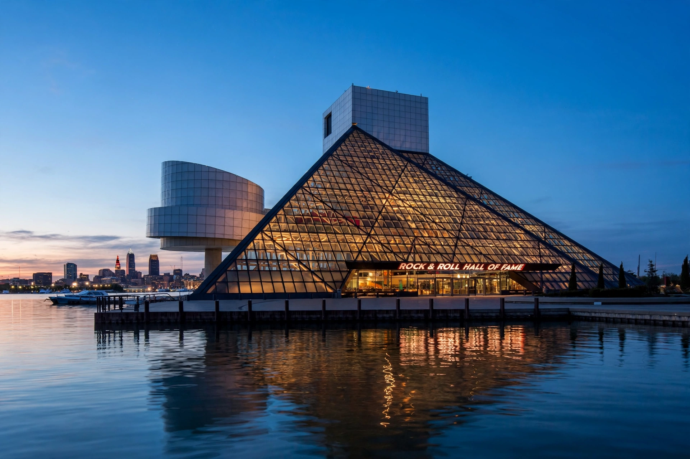

From Wikipedia, the free encyclopedia
| Rock and Roll Hall of Fame | |
 The Rock and Roll Hall of Fame in Cleveland, Ohio | |
| Established | April 20, 1983 (foundation); museum opened September 2, 1995 |
| Location | 1100 Rock and Roll Boulevard, Cleveland, Ohio, US |
| Type | Music museum and hall of fame |
| Architect | I. M. Pei |
| Founder | Ahmet Ertegun and the Rock and Roll Hall of Fame Foundation |
The Rock and Roll Hall of Fame (RRHOF), sometimes simply referred to as the Rock Hall, is a museum and hall of fame located in downtown Cleveland, Ohio, United States, on the shore of Lake Erie. The museum documents the history of rock music and the artists, producers, engineers, and other notable figures and personnel who have influenced its development.
The Rock and Roll Hall of Fame Foundation was established on April 20, 1983, by Ahmet Ertegun, founder and chairman of Atlantic Records. After a long search, Cleveland was chosen as the Hall of Fame's permanent home in 1986, helped by the city's claim that disc jockey Alan Freed coined the term "rock and roll" there and by a public vote and financial package. The museum, designed by architect I. M. Pei as a glass pyramid rising from the lakefront, was dedicated on September 2, 1995.
Inductees are honoured in several categories. Performers are artists whose first commercial recording was released at least 25 years before the year of induction. Nominees are selected by a committee and voted on by an international body of more than a thousand rock experts; since 2012 fans have also participated through an aggregate fan ballot. Early Influences are artists whose music predates or inspired rock and roll. The Ahmet Ertegun Award (formerly Non-Performers) honours songwriters, producers, executives, journalists and other industry professionals, while the Award for Musical Excellence honours musicians and producers with outstanding contributions.
The first induction ceremony was held in New York City in 1986. The inaugural class included Chuck Berry, James Brown, Ray Charles, Sam Cooke, Fats Domino, the Everly Brothers, Buddy Holly, Jerry Lee Lewis, Little Richard and Elvis Presley, with John Lennon and others honoured in associated categories in later years. Annual ceremonies have since alternated among New York, Los Angeles and Cleveland. Inductees include the Beatles, Bob Dylan, Aretha Franklin, Led Zeppelin, Madonna and Prince.
The building's design, a tower with a glass pyramid supported by a cantilevered structure, was intended by Pei to evoke the energy of rock music. Exhibits span several floors and include instruments, costumes, stage props, handwritten lyrics and films. The Hall of Fame gallery features inductee signatures and a theatre showing footage from induction ceremonies. The museum also maintains a library and archives, opened in 2012, at a separate campus in Cleveland.
The Hall has been criticised for the opacity of its nomination process, for the dominance of a small nominating committee, for under-representation of women and of genres such as progressive rock, heavy metal and hip hop (largely addressed in later years), and for the commercialisation of inductions. Several inductees, including members of the Sex Pistols, have publicly declined to attend the ceremony.